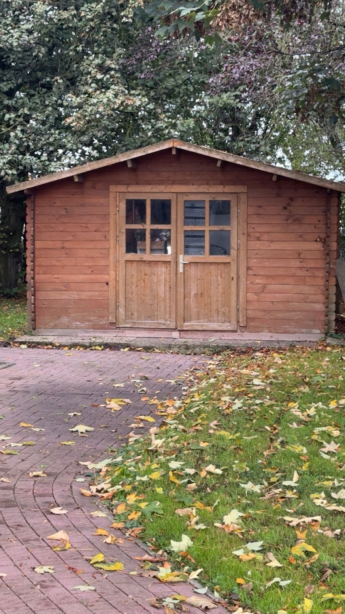

Die Hütte Besteht Aus warmen rötlich-braunem Holz und wirkt durch ihre Schlichte Bauweise besonders einladend. Auffällig sind die großen Fenster in Der Eingangstür durch die Fenster kann man etwas vom Inneren Der Hütte sieht und das Dach hat zwei Seiten. Um der Hütte herum wachsen Viele Bäume und Sträucher. Auf dem Boden liegen viele bunte Blätter. Sie zeigen, dass gerade Herbst ist. Vor der Hütte führt ein gepflasterter Weg Entlang die Umgebung wirkt der sauber und gepflegt. Die Hütte könnte zum Beispiel als Gartenhaus oder als Aufenthaltsraumgenutzt Werden. Insgesamt wirkt der Ort sehr ruhig und gemütlich. Man könnte sich gut vorstellen, dort eine Pause zu machen und die Natur zu genießen.
? Zurück zur Navigation